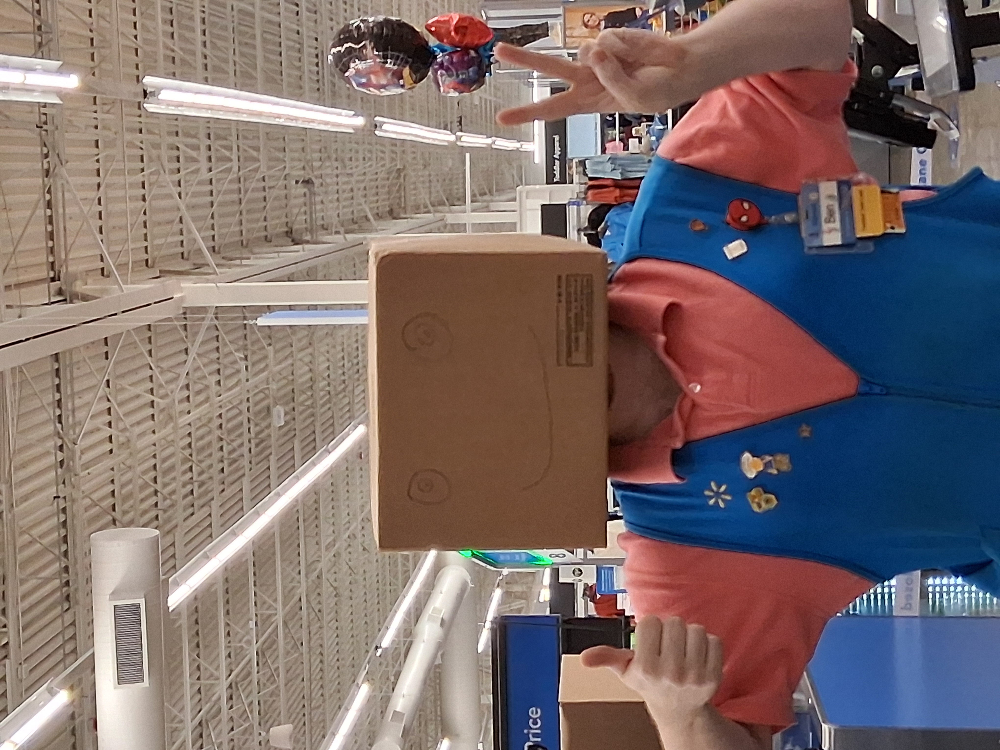

If you would like to contact me you can get in touch with me here:
Email: benorris42@gmail.com
Phone: (931) 967-1181
I am an aspiring programmer who enjoys problem solving and has a passion for technology.
Springboard [Enterprise Software Development Career Program] (2025 to 2026)
Tennessee Technological University (2014 to 2016)
Franklin County High School (2011 to 2015)
More to come soon!
My First SciFi Book Which I Haven't Given A Name Yet [WIP Not finished yet so the link just redirects back to this page for now.]